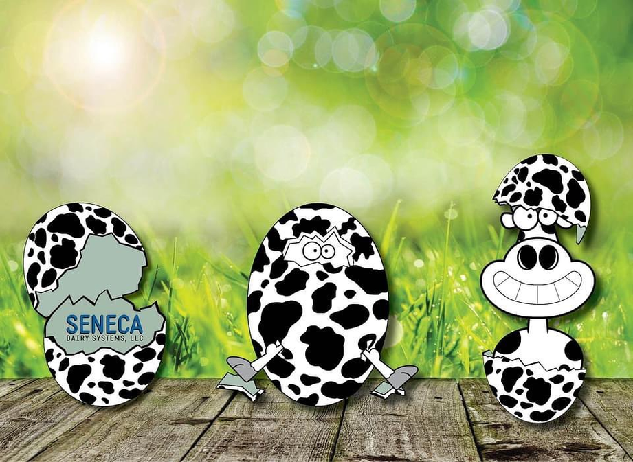

Seneca Dairy Systems is a manufacturer and distributor of dairy equipment serving farms throughout North America. As Marketing & Digital Media Specialist, I worked across marketing, product management, content production, and website development initiatives to improve how customers discovered, researched, and purchased products online. The project involved coordinating digital assets, organizing large volumes of product information, and helping create an e-commerce experience that reflected the company's expertise and product quality.